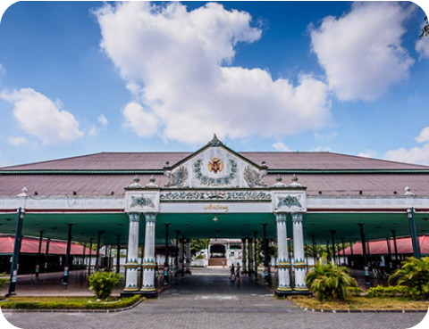

Daerah Istimewa Yogyakarta adalah Daerah Istimewa setingkat provinsi di Indonesia yang merupakan peleburan dari Negara Kesultanan Yogyakarta dan Negara Kadipaten Paku Alaman. Daerah Istimewa Yogyakarta terletak di bagian selatan Pulau Jawa, Daerah Istimewa yang memiliki luas 3.185,80 km2 ini terdiri atas satu kota, dan empat kabupaten, yang terbagi lagi menjadi 78 kapanewon/kemantren, dan 438 kalurahan/kelurahan. Menurut sensus penduduk 2010 memiliki populasi 3.452.390 jiwa dengan proporsi 1.705.404 laki-laki, dan 1.746.986 perempuan, serta memiliki kepadatan penduduk sebesar 1.084 jiwa per km2, Walau secara geografis merupakan daerah setingkat provinsi terkecil kedua setelah DKI Jakarta, Daerah Istimewa ini terkenal di tingkat nasional, dan internasional, terutama sebagai tempat tujuan wisata andalan setelah Provinsi Bali.
